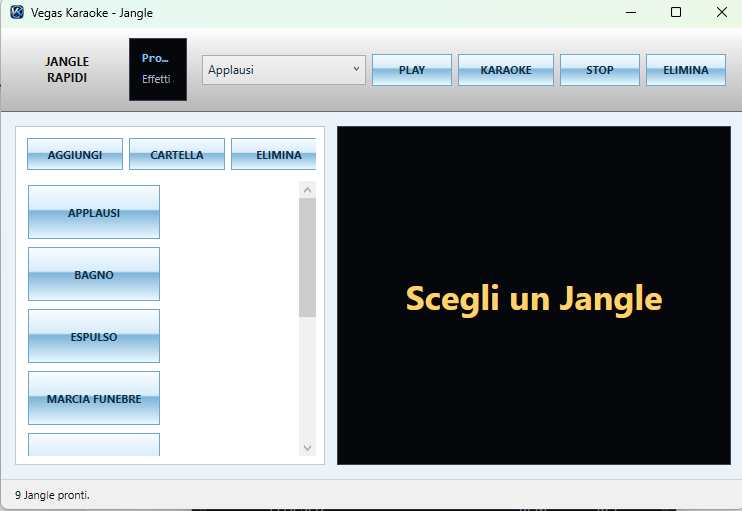

Screenshot 1.7.1
Le schermate principali del software aggiornato.

Mini Player 1.7.1
Modalità compatta con comandi principali in una sola barra.

Player principale
Interfaccia completa per controllo live, mixer e schermi.

Explorer File
Ricerca, filtri, importazione e preascolto delle basi.

Database Archivio Basi
Gestione database, cantanti, produttori, alias e cartelle.

Personalizzazione Karaoke
Font, colori, logo, sfondo, GIF e modalità 2/4 righe.

Controlli Live
Tasto rapido prossima canzone e supporto pedale MIDI.

Hardware Audio e Routing
ASIO, preascolto, microfono, VST e routing uscite.

Salvataggi e Backup
Impostazioni, playlist, backup e ripristino.

Creazione Karaoke IA
Separazione voce/base, trascrizione, LRC, MP3 e MP4 karaoke.

YouTube Plugin
Uso per contenuti propri, autorizzati o con licenza compatibile.

Jingle Rapidi
Applausi, effetti e jingle personalizzati.

Spartito / Piano MIDI
Visualizzazione note MIDI e tastiera virtuale.

Multitraccia Band
Gestione tracce, mute, solo, pan, routing e testi.

Pannello DJ Online
Accesso al pannello online per gestione serata.

Schermo Karaoke
Testo grande, logo personalizzato e fullscreen.

Sistema Licenza
Attivazione licenza Home/Professional con chiave.